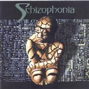

Home Artist links Label link

Schizophonia - Quaternaire
| Artist: | Schizophonia |
| Title: | Quaternaire |
| Label: | MSI/Kendo KEN 01 |
| Length(s): | 52 minutes |
| Year(s) of release: | 1999 |
| Month of review: | [04/2001] |
Line up
Marco D. Miserocchi - vocals, words, flute
Marco Caldi - guitars, bass, synths, programming, electronic drums
Thierry Hochstatter - drums, percussion
David Richards - electronic drums
J.B. Meier - percussion
Tracks
| 2) | El´ments | 5.52
|
| 3) | Quaternaire | 5.50
|
| 5) | Danse Des Ombres | 6.15
|
| 6) | Psyché | 5.02
|
| 8) | Aquarius | 4.02
|
Summary
A band of many nationalities if you look at the names. The album has been out a while
and on a "big" label as well, but I had never heard of them.
The music
The first track is the almost 10 minutes of Ecume. A slow ponderous bass, spaceous
acoustic guitar lead into a relaxed and soothing Floydian atmosphere. The guitar
playing is now more electric, but continues to be relaxed. The French vocals of
Miserocchi are also rather subdued, and again remind strongly of Pink Floyd. The chorus
sounds more uplifting and also has some pointers to Alan Parsons Project. In the middle
we have a more atmospheric interlude, with spaceous chords on guitars, bleeping and
tweeting keyboards. Like Floyd the band has a strong blues feel in their music and
certainly knows how to create an atmosphere. Good opener.
Eléments opens in a more percussive way, but the guitar (starting engine style)
again nods to Pink Floyd. The somewhat worldlike atmosphere of the song is more
distinctive and loud double vocals as well. Strong clear chords on the guitar ring out.
Quaternaire has eerie shards of guitar, loud vocals and rolling thunder. There's also
somethin of Yes in here, especially in the vocal part and the more Steve Howe like
guitar playing. I am not that fond of this track. Melodically it is not great and
the band is fiddling around a bit more. The vocals become more theatrical later on
and the song has, like its predecessor, quite heavy percussion.
The next one up is Mégalithes and this track is pure progressive with a nod
to Pendragon in the melodic guitar work. A loose and atmospheric interlude with bubbly
acoustic guitar and repetitive guitar in the back.
Danse Des Ombre is again more percussive, a bit tribal sounding even. A dark moody track
with some folkiness in the guitar and a Yes-like uplifting chorus.
The somber vocals return in Psyché, which tends to move along without really getting
to me. A bit too dreary.
With L'abîme we come to the longest track on the album. Again a strong role for
the percussionist. The "starting engine" sound of the guitar is by now familiar.
In a way this part can be likened to Eléments with rather loud vocals.
The final part is quiet acoustics with a little flute. Music for by a still brook. Then the
vocals set in again.
Aquarius is a typical instrumental closer.
Conclusion
The main influence on this band is Pink Floyd, this is without a doubt. Often you will
hear things that are familiar, especially in the beginning. Similarities in guitar playing,
and also sometimes in the vocals and vocal style. But the band does not stop there. They
add theor own strong percussives, the tribal feel, some Yes-like vocalizations and
even some Pendragonish guitar and Ange theatrics. These are only reference points for
yourself, but I think on the whole, the band has enough of a face of their own.
The sound is often quite dark, and this is also evident in the booklet. The lyrics are
in French (and not that easy to read either) and the band comes to the best results in the
opening two tracks and in the bombasm of a song such as L'Abime. I do have to say that
somewhere in the middle I got the impression of "having heard it all".
© Jurriaan Hage